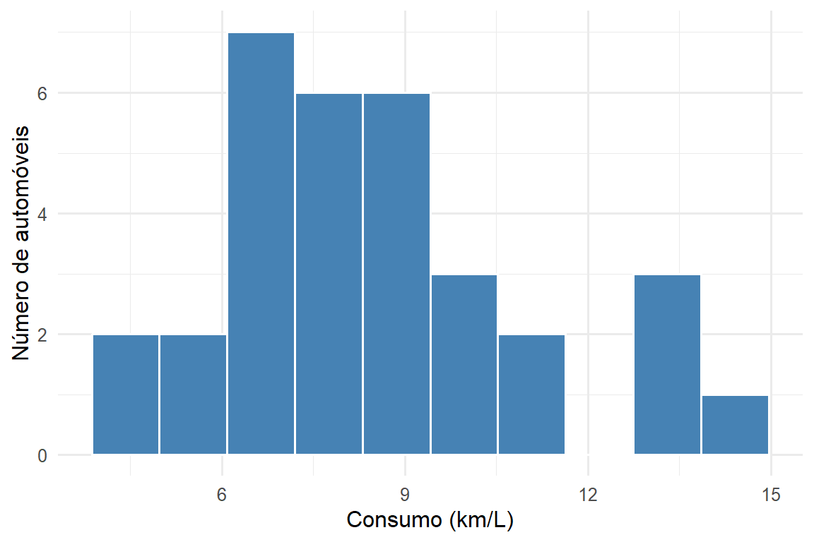
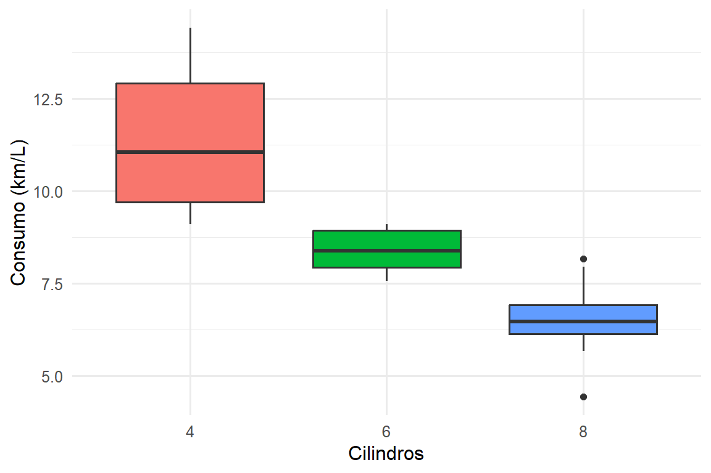
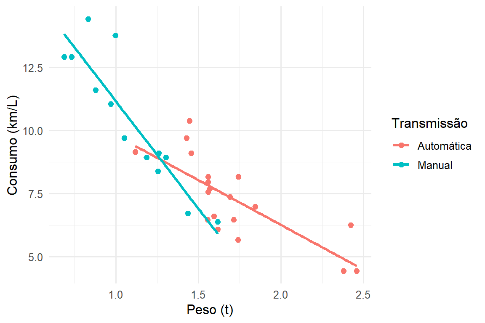
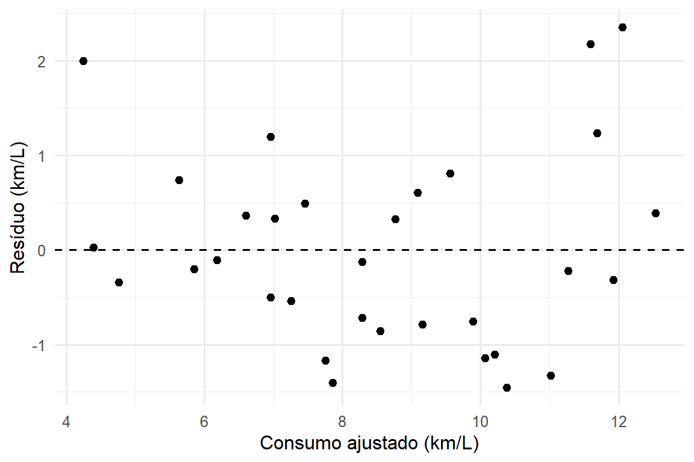

Mostrar código
ggplot(dados, aes(consumo_kml)) +
geom_histogram(bins = 10, fill = "steelblue", color = "white") +
labs(x = "Consumo (km/L)", y = "Número de automóveis")
Um artigo-exemplo escrito em Quarto
Este artigo investiga quais características de projeto explicam o consumo de combustível de automóveis, a partir do banco mtcars. Uma análise exploratória mostra que o consumo diminui com o peso, a potência e o número de cilindros. Um modelo de regressão linear múltipla com peso, potência e tipo de transmissão explica a maior parte da variação observada. O documento serve de modelo para a escrita de artigos reprodutíveis: todos os números, tabelas e figuras são gerados pelo código.
consumo de combustível, regressão linear, Quarto, reprodutibilidade
O consumo de combustível é uma das variáveis centrais no planejamento de transportes: afeta o custo operacional, as emissões e a escolha do veículo. Entender quais características de projeto o explicam ajuda tanto o usuário quanto o formulador de políticas.
Este estudo usa o banco clássico mtcars, extraído da revista Motor Trend de 1974 e analisado em detalhe por Henderson e Velleman (1981). A análise é escrita como um documento reprodutível, no espírito da programação letrada (Knuth 1984), com as ferramentas descritas em Xie, Allaire, e Grolemund (2018) e Wickham, Çetinkaya-Rundel, e Grolemund (2023).
Os objetivos são:
O banco contém 32 automóveis e 11 variáveis. As unidades originais foram convertidas para o sistema métrico. As variáveis usadas estão na Tabela 1.
| Variável | Descrição | Unidade |
|---|---|---|
consumo_kml |
Consumo de combustível | km/L |
peso_t |
Peso do veículo | t |
hp |
Potência bruta | hp |
cilindros |
Número de cilindros | 4, 6 ou 8 |
transmissao |
Tipo de transmissão | Aut./Manual |
O consumo foi modelado por regressão linear múltipla (Equação 1), estimada por mínimos quadrados ordinários:
\[ \text{Consumo}_i = \beta_0 + \beta_1\,\text{Peso}_i + \beta_2\,\text{Potência}_i + \beta_3\,\text{Manual}_i + \varepsilon_i \tag{1}\]
em que \(\text{Manual}_i\) vale 1 para transmissão manual e 0 para automática, e \(\varepsilon_i\) é o erro aleatório.
O consumo médio é de 8.5 km/L, variando de 4.4 a 14.4 km/L (Figura 1).
ggplot(dados, aes(consumo_kml)) +
geom_histogram(bins = 10, fill = "steelblue", color = "white") +
labs(x = "Consumo (km/L)", y = "Número de automóveis")
A Tabela 2 resume as variáveis por número de cilindros: carros de 8 cilindros são mais pesados, mais potentes e consomem bem mais.
dados |>
group_by(Cilindros = cilindros) |>
summarise(
`N` = n(),
`Consumo (km/L)` = mean(consumo_kml),
`Peso (t)` = mean(peso_t),
`Potência (hp)` = mean(hp)
) |>
kable(digits = 1)| Cilindros | N | Consumo (km/L) | Peso (t) | Potência (hp) |
|---|---|---|---|---|
| 4 | 11 | 11.3 | 1.0 | 82.6 |
| 6 | 7 | 8.4 | 1.4 | 122.3 |
| 8 | 14 | 6.4 | 1.8 | 209.2 |
A Figura 2 mostra os dois padrões principais: o consumo cai com o número de cilindros (a) e com o peso (b).
ggplot(dados, aes(cilindros, consumo_kml, fill = cilindros)) +
geom_boxplot(show.legend = FALSE) +
labs(x = "Cilindros", y = "Consumo (km/L)")
ggplot(dados, aes(peso_t, consumo_kml, color = transmissao)) +
geom_point(size = 2) +
geom_smooth(method = "lm", formula = y ~ x, se = FALSE) +
labs(x = "Peso (t)", y = "Consumo (km/L)", color = "Transmissão")

modelo <- lm(consumo_kml ~ peso_t + hp + transmissao, data = dados)
r2 <- summary(modelo)$r.squared
coefs <- coef(modelo)O modelo da Equação 1 explica 84% da variação do consumo (\(R^2\) = 0.84). Os coeficientes estão na Tabela 3.
summary(modelo)$coefficients |>
as.data.frame() |>
setNames(c("Estimativa", "Erro padrão", "t", "p-valor")) |>
`rownames<-`(c("Intercepto", "Peso (t)", "Potência (hp)",
"Transmissão manual")) |>
kable(digits = 3)| Estimativa | Erro padrão | t | p-valor | |
|---|---|---|---|---|
| Intercepto | 14.455 | 1.123 | 12.867 | 0.000 |
| Peso (t) | -2.698 | 0.848 | -3.181 | 0.004 |
| Potência (hp) | -0.016 | 0.004 | -3.902 | 0.001 |
| Transmissão manual | 0.886 | 0.585 | 1.514 | 0.141 |
Cada tonelada adicional reduz o consumo em cerca de 2.7 km/L, mantidas as demais variáveis constantes. A Figura 3 indica que os resíduos não apresentam padrão evidente em relação aos valores ajustados.
ggplot(data.frame(ajustado = fitted(modelo), residuo = resid(modelo)),
aes(ajustado, residuo)) +
geom_hline(yintercept = 0, linetype = "dashed") +
geom_point(size = 2) +
labs(x = "Consumo ajustado (km/L)", y = "Resíduo (km/L)")
O peso aparece como o principal determinante do consumo, resultado coerente com a física do movimento: mais massa exige mais energia para acelerar e vencer a resistência ao rolamento. A potência tem efeito negativo menor, e o efeito da transmissão manual, que parece grande na Figura 2, diminui quando o peso é controlado — carros manuais do banco são, em média, mais leves.
As limitações principais são a amostra pequena e antiga (32 modelos de 1973–74) e a ausência de variáveis aerodinâmicas.
Peso e potência explicam a maior parte da variação no consumo dos automóveis analisados. Do ponto de vista da escrita, o ganho do Quarto é que, ao trocar o banco de dados e clicar em Render, todos os números do texto, as tabelas e as figuras são atualizados automaticamente.